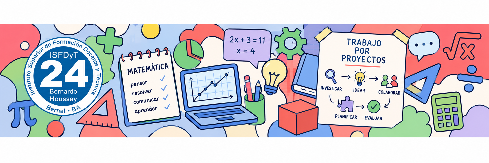

Cada estudiante presenta su proyecto individual, proyecta y demuestra el funcionamiento en vivo de su Libro de GeoGebra y de su aplicación interactiva desarrollada mediante vibe coding.
Entre 7 y 10 minutos por estudiante para presentar la propuesta, seguido de preguntas e intercambio con los compañeros.
Demostración del Libro de GeoGebra (construcciones y deslizadores) y de la app de vibe coding con diseño accesible (DUA).
Problema de investigación, año destinatario de secundaria, contenidos matemáticos trabajados y producto final elaborado.
| N° | Estudiante | Título del proyecto | Año | Resumen del proyecto | Libro de GeoGebra | App de vibe coding | Estado |
|---|---|---|---|---|---|---|---|
| 1 | Alicia Beatriz Astigarraga | El desafío de los envases | 1.° año de secundaria | Construcción y diseño de envases reciclables a partir del análisis de la relación entre volumen y superficie en cilindros y prismas para optimizar material. | Completo | ||
| 2 | Jazmín Carrizo | Rutas eficientes de reparto | 4.° año de secundaria | Diseño y optimización de recorridos de reparto en la ciudad mediante cálculo de distancias con teorema de Pitágoras, sistemas de coordenadas y funciones lineales de costo para calcular el punto de equilibrio entre bici y moto. | Incompleto | ||
| 3 | Nicolás Gómez | ¿Cuándo colapsa el sistema? | 5.° año de secundaria | Modelización del crecimiento y propagación de un brote epidémico mediante funciones exponenciales y logarítmicas para asesorar al municipio sobre la capacidad sanitaria y toma de decisiones. | Completo | ||
| 4 | Vanina Julia Malatesta | Estudio InfinitA: tras las huellas de la obra perdida | 4.° año de secundaria | Reconstrucción de una obra artística extraviada mediante el descifrado de acertijos sobre transformaciones en el plano, razones y proporción áurea en una propuesta gamificada. | Completo | ||
| 5 | Cintia Marcaccio | ¿Alcanza para todos? Fracciones en la merienda escolar | 1.° año de secundaria | Planificación, reparto equitativo y cálculo de porciones y costos para organizar una merienda comunitaria aplicando fracciones equivalentes, orden y proporcionalidad directa. | Completo | ||
| 6 | Verónica Oliva | El gallinero matemático | 2.° / 3.° año de secundaria | Optimización del espacio para la construcción de un gallinero en el patio escolar analizando relaciones entre perímetro constante y área máxima en figuras geométricas. | Incompleto | Incompleto | |
| 7 | Fabricio Rebolledo | El tiro perfecto: cuando la matemática entra a la cancha | 3.° año de secundaria | Modelización de la trayectoria parabólica en tiros de básquetbol mediante funciones cuadráticas, experimentación con el simulador web interactivo y formulación del modelo del tiro perfecto para una muestra escolar. | Completo | ||
| 8 | Iris Toloza | Construyendo la civilización: el código cartográfico de Minecraft | 1.° / 2.° año de secundaria | Planificación espacial y diseño de un mapa cartográfico en cuadrícula aplicando coordenadas cartesianas, escalas y cálculo de áreas poligonales. | Incompleto | Incompleto | Incompleto |
| 9 | Karen Salinas | Misión energía: código verde | 3.° año de secundaria | Relevamiento del consumo de artefactos eléctricos y diseño de una campaña escolar de uso eficiente mediante modelización con funciones lineales e interpretación de unidades en kWh. | Completo | ||
| 10 | Ángel Viegas | La geometría de las colmenas y el espacio | 2.° año de secundaria agraria | Mapeo poligonal de bancales de la huerta, teselaciones hexagonales, conjetura del panal y optimización de sistemas de riego por goteo sustentable. | Completo | ||
| 11 | Marisa Sierra | ¿A dónde se va mi batería? (Misión Batería + Campaña de afiches y flyers) | 2.° año de secundaria | Investigación estadística sobre el consumo de batería en teléfonos móviles según las aplicaciones utilizadas, calculando porcentajes, promedios, mediana y rango para diseñar una campaña escolar de concientización y uso responsable mediante afiches y flyers. | Completo |